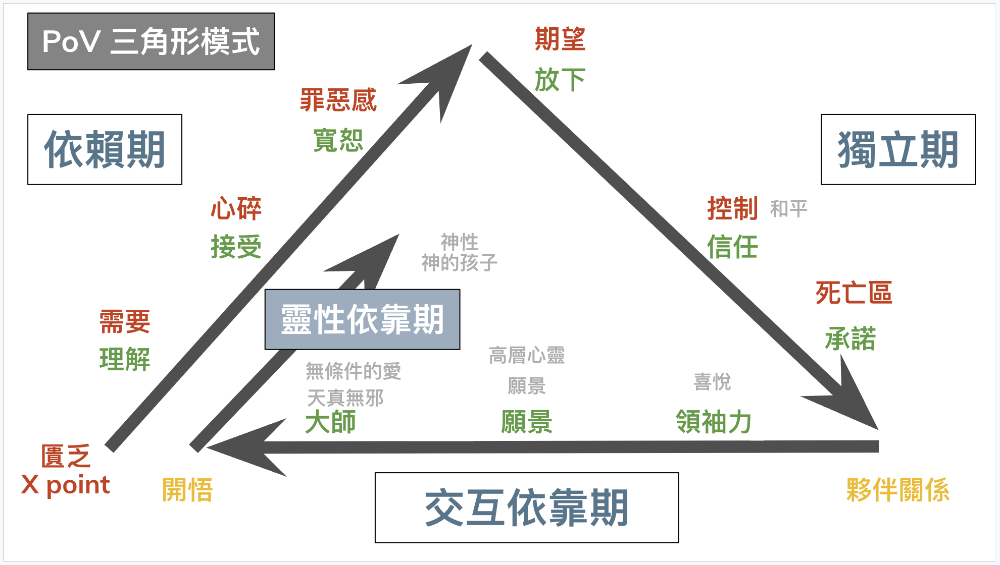

我們為什麼不急著翻開書？
Chuck 談「罪咎」，談的不只是做錯事之後的內疚。他也在談攻擊、防衛、受害、競爭、控制、關係，以及人為什麼會害怕自己生命的下一步。
如果只按日常語意讀，「罪惡感」容易被理解成一種負面情緒；「負責任」容易被理解成承認錯誤或接受懲罰。但在 POV 的脈絡中，這些字詞被放進一幅更大的心理歷程圖裡。
我們這次先做的，不是把所有理論背起來，而是辨認：這本書究竟使用什麼樣的眼光，來理解一個人的痛苦？
包括你自己。
這句話先留在這裡。它不是一道必須答對的題目，也不要求我們今天就完全接受。帶著它進入閱讀，看看接下來會碰見什麼。
HSG：用模型來理解，
而不是讓模型取代經驗
HSG（全面靈性扎根）是一套開放、可以修訂的參照模型。它讓不同的心理、哲學與靈性觀點彼此對話；找到相通之處，也保留不同之處。
全面
願意讓不同觀點進入視野，不急著把任何一套學說當成全部。
扎根
在面對未知、差異，甚至看似矛盾的觀點時，仍然能安定地探索。
HSG 在意的，不只是「這個解釋合不合理」，也在意「它是否幫助我們看見自己的經驗」。所有能說明的理論，都還是地圖。
整個參照模型所回應的問題
「我是誰？我是否存在？」在 HSG 以《與神對話》為參照的形上學敘事中，分裂使經驗成為可能；在遺忘之後，我們又透過角色、關係、比較與自我定義，不斷尋找確定感。
這是一種理解存在的參照方式，不必把它當成人人都必須同意的宇宙論。我們這堂課更需要看的是：這樣的故事，如何幫助我們理解日常生活的反應？
這張總覽圖將 HSG 的核心議題、心牆與防衛機制、罪咎與恐懼、受害者位置，以及通往寬恕、自由與合一的歷程放在同一張圖上。這裡先用它找回整體脈絡，後面的單元會逐步展開。
保留原圖的完整配置；網頁顯示使用壓縮版 PDF，以便手機與電腦閱讀。
分裂不是錯誤，
小我也不是敵人
在 HSG 的語言裡，小我是分裂。當我們說「我是好人」「我不是那種人」「我不應該失敗」，就同時建立了與自己相對的另一端。
這個區分使我們能認識自己，也可能讓我們陷入反覆證明自己的困境。越需要證明「我沒有錯」，越可能無法停止檢查「我是不是有錯」。
從「我不夠好」到「我不好」
一句批評來了。我想解釋，想反擊，也可能先責怪自己。表面上是在處理別人的一句話，心裡卻可能已經開始審判自己。
在 HSG 的「愛你的小我」裡，我們不以消滅這個聲音為目標，而是去認識它、理解它，並與它重新建立關係。
四個可以一起觀看的元素
| 名稱 | 觀察方向 |
|---|---|
| 原型 | 我習慣用什麼角色認識自己？ |
| 心魔 | 那個角色最害怕成為的相對面是什麼？ |
| 陰謀 | 我反覆相信、演出的內在故事是什麼？ |
| 偶像 | 我企圖從什麼狀態或事物取得愛、價值與確定感？ |
這四個元素是 HSG 整合模型中的觀察工具，不是要替自己或別人迅速貼上標籤。尤其偶像常有相反的兩種表現：看似相反的行為，未必意味著已經自由。
POV 三角形：
理解生命課題的一張地圖
願景心理學（Psychology of Vision，POV）的三角形模式，呈現不同階段的生命課題與轉變。這張圖包含的內容遠比幾個階段名稱更多，我們直接從原始圖表開始閱讀。

此處為你上傳的 2018 年 PoV 三角形公用版 PDF，保留橫向原始閱讀方向。若手機無法預覽，可點選「放大查看這張圖」。
課前可以先認識幾個關鍵位置：依賴期、獨立期、死亡區，以及進入夥伴關係後的歷程。 這些名稱協助我們閱讀 Chuck 的論述；至於三角形上其他細節，可以在往後的課程中逐步回看。
這堂課先留意的是：受害、防衛與罪咎，不只出現在看似無力的人身上，也可能藏在看似強大、獨立，或者習慣控制局面的人身上。
受害者位置，
與真正的回應能力
HSG 提供三個很實用的觀察訊號。當我們發現自己出現這些感受時，可以留意：我是不是已經站在「受害者」的位置？
在這個參照模型裡，「受害」不只是一種外在遭遇，也是一種內在站位：當我把改變的力量全部交給另一個人，自己便容易感到無能為力。
Chuck 談的 responsibility，在這本書的閱讀脈絡中，重點之一是能否對眼前情境作出適切的回應，而不只是找誰該受罰。
反應
急著證明、攻擊、退縮、補償。行動可能很大，卻未必真正回應眼前需要。
回應
看見眼前實際發生什麼，辨認自己仍有什麼選擇，並採取合適的行動。
這堂課先不要求每個人理解或做到「全責性」。我們先從可以練習的一步開始：在困難的時候，我還能如何回應？
HSG 與 POV 在哪裡交會？
這兩套模型並不是同一個理論，也不需要強行合併。但我們能把熟悉的 HSG 語言，當成閱讀 Chuck 的參照。
| HSG 的觀察 | 進入《療癒罪咎》時留意 |
|---|---|
| 分裂與小我 | 為什麼人需要透過對錯、攻擊或防衛，保住一個自我形象？ |
| 陰謀與偶像 | 某個人生故事是否在反覆發生？它企圖維持什麼？ |
| 受害者位置 | 如何從指責與無能為力，轉向重新找回回應能力？ |
| 原罪式的懷疑 | 為什麼罪咎有時不像做錯事，卻像一種深藏的「我有問題」？ |
| 生命目的與給出 | 為什麼人可能既想向前，又害怕成功、關係與自己的下一步？ |
而是重新看見自己的問題。
日後我們會逐步回到純真、寬恕、連結、生命目的與超越善惡。現在不必先把那些答案講完。
帶著幾個問題，開始閱讀
這些不是作業，也不需要在課前寫出標準答案。可以只選一題，安靜想想最近的一次經驗。
- 最近一次讓我急著說「不是我的錯」的事情，是什麼？
- 那一刻，我最害怕別人怎麼看待我？
- 我有沒有一面要求別人負責，一面覺得自己什麼也做不了的時候？
- 我以為自己是在「解決問題」，實際上有沒有可能只是在努力證明自己？
- 如果暫時不急著分出誰對誰錯，我眼前還有哪些可以做的事？
罪惡感，不一定是你以為的罪惡感。
我們會從《療癒罪咎》的前兩篇開始，慢慢認識罪咎、攻擊、防衛，以及那些我們原本沒有注意到的內在故事。
不急著相信，也不急著反駁。帶著自己的經驗來就好。
資料參照：HSG〈思想根基與參照模型〉（Elea／HSG 內部整理）；POV 2018 年《PoV 新三角圖》公用版；本讀書會的課程討論。三角形段落為課前導覽性整理，與原圖的具體圖示和各層解釋應分開閱讀。